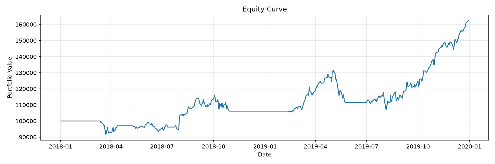
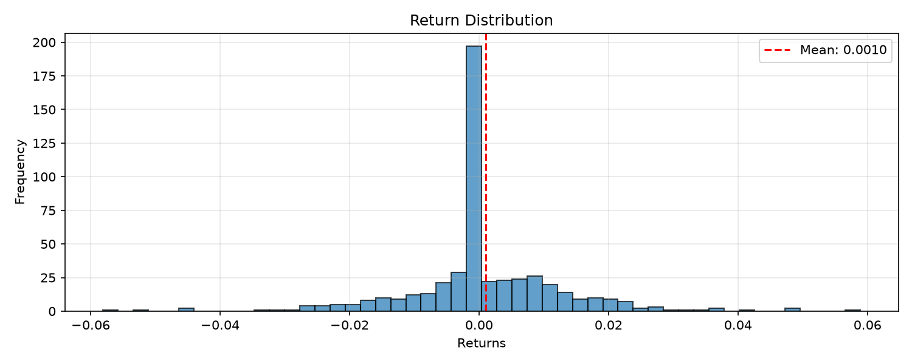

Symbol: SPY
Strategy: sma_crossover
Periods: 502
| Metric | Value |
|---|---|
| Total Return | 62.36% |
| Annualized Return | 27.54% |
| Annualized Volatility | 18.85% |
| Sharpe Ratio | 1.28 |
| Sortino Ratio | 1.75 |
| Calmar Ratio | 1.48 |
| Max Drawdown | -18.66% |
| Omega Ratio | 1.99 |
| Skewness | -0.07 |
| Kurtosis | 4.97 |
| VaR (95%) | -1.78% |
| CVaR (95%) | -2.78% |
| Metric | Value |
|---|---|
| Panel Pricing Mode | net-exposure |
The reported P&L is net_exposure x mean(asset returns), and the costs are charged on the net exposure. A long/short book is not representable by that scalar: see the panel book diagnostic above.
| Regime | Bars |
|---|---|
| unknown | 199 |
| bull_low | 163 |
| bear_high | 82 |
| bull_high | 37 |
| sideways_low | 12 |
| sideways_high | 9 |
| Regime | Obs | Ann. Return | Ann. Vol | Sharpe | Max Drawdown | Win Rate |
|---|---|---|---|---|---|---|
| bull | 200 | 44.27% | 20.14% | 2.20 | -14.01% | 40.00% |
| sideways | 21 | -58.37% | 31.43% | -1.86 | -11.95% | 28.57% |
| bear | 82 | 75.51% | 13.38% | 5.65 | -4.25% | 41.46% |
| Regime | Obs | Ann. Return | Ann. Vol | Sharpe | Max Drawdown | Win Rate |
|---|---|---|---|---|---|---|
| high | 155 | 22.61% | 12.81% | 1.77 | -5.58% | 26.45% |
| low | 283 | 43.69% | 22.20% | 1.97 | -18.66% | 48.41% |
| Regime | Obs | Ann. Return | Ann. Vol | Sharpe | Max Drawdown | Win Rate |
|---|---|---|---|---|---|---|
| bull_low | 163 | 69.00% | 21.41% | 3.22 | -9.73% | 48.47% |
| bull_high | 37 | -28.15% | 12.42% | -2.27 | -3.47% | 2.70% |
| bear_high | 82 | 75.51% | 13.38% | 5.65 | -4.25% | 41.46% |
| Regime | Start | End | Length |
|---|---|---|---|
| unknown | 2018-01-02T00:00:00 | 2018-10-15T00:00:00 | 199 |
| bull_low | 2018-10-16T00:00:00 | 2018-10-23T00:00:00 | 6 |
| bull_high | 2018-10-24T00:00:00 | 2018-12-17T00:00:00 | 37 |
| sideways_high | 2018-12-18T00:00:00 | 2018-12-26T00:00:00 | 6 |
| bear_high | 2018-12-27T00:00:00 | 2019-04-25T00:00:00 | 82 |
| sideways_high | 2019-04-26T00:00:00 | 2019-04-30T00:00:00 | 3 |
| sideways_low | 2019-05-01T00:00:00 | 2019-05-16T00:00:00 | 12 |
| bull_low | 2019-05-17T00:00:00 | 2019-12-30T00:00:00 | 157 |
| Metric | Value |
|---|---|
| Regime Robustness | moderate |
| Edge Concentrated in One Regime | False |
| Regimes Traded | 3.00 |
| Positive-Sharpe Regimes | 2.00 |
| Negative-Sharpe Regimes | 1.00 |
| Best Regime | bear_high |
| Best Regime Sharpe | 5.65 |
| Worst Regime | bull_high |
| Worst Regime Sharpe | -2.27 |
| Sharpe Spread (Best - Worst) | 7.91 |
| Dominant Regime (Most Obs) | bull_low |
| Interpretation | Multiple regimes produce a positive Sharpe, but the spread between the best and worst regime is wide; performance is inconsistent across regimes. |
| Metric | Value |
|---|---|
| Total Trades | 5.00 |
| Winning Trades | 4.00 |
| Losing Trades | 1.00 |
| Win Rate | 80.00% |
| Avg Win | 15.27% |
| Avg Loss | 1.47% |
| Profit Factor | 47.02 |
| Expectancy | 5.7068 |
| Trades Closed at End | 1.00 |
| % of Trades Closed at End | 20.00% |
| Metric | Value |
|---|---|
| Probabilistic Sharpe Ratio | 0.9632 |
| P-Value (vs SR*) | 0.0368 |
| Benchmark Sharpe (SR*) | 0.0000 |
| Z-Score | 1.7886 |
| Observations | 502 |
| Skewness | -0.0729 |
| Kurtosis | 7.9675 |
| Field | Value |
|---|---|
| source_path | /home/runner/work/Quantitative-Trading-Skills/Quantitative-Trading-Skills/skills/quantitative-backtesting/assets/example_data/real_market_data/AAPL.csv |
| load_timestamp | 2026-11-10T04:53:59.169648Z |
| file_format | .csv |
| file_size_bytes | 118482 |
| symbol_filter | SPY |
| start_date_filter | N/A |
| end_date_filter | N/A |
| date_range_original | N/A |
| date_range_final | ('2010-01-04 00:00:00', '2019-12-30 00:00:00') |
| original_shape | (2515, 6) |
| final_shape | (2515, 5) |
| columns_original | ["date", "open", "high", "low", "close", "volume"] |
| columns_final | ["open", "high", "low", "close", "volume"] |
| validation_passed | true |
| validation_messages | [] |
| transformations_applied | ["column_names_lowercase_stripped", "set_index_from_date", "sorted_index", "coerced_numeric_types"] |
| checksum | 3a4067b48208db2b |
| point_in_time / passed | true |
| point_in_time / violations | [] |
| point_in_time / warnings | [] |
| bias_controls_engaged | true |
| train_val_test_split / train_start | 2010-01-04 00:00:00 |
| train_val_test_split / train_end | 2015-12-30 00:00:00 |
| train_val_test_split / val_start | 2015-12-31 00:00:00 |
| train_val_test_split / val_end | 2017-12-28 00:00:00 |
| train_val_test_split / test_start | 2017-12-29 00:00:00 |
| train_val_test_split / test_end | 2019-12-30 00:00:00 |
| train_val_test_split / train_size | 1509 |
| train_val_test_split / val_size | 503 |
| train_val_test_split / test_size | 503 |
| train_val_test_split / train_frac | 0.6 |
| train_val_test_split / val_frac | 0.2 |
| train_val_test_split / test_frac | 0.2 |
| train_val_test_split / separation_check / disjoint | true |
| train_val_test_split / separation_check / chronological | true |
| train_val_test_split / separation_check / train_val_overlap | 0 |
| train_val_test_split / separation_check / val_test_overlap | 0 |
| train_val_test_split / separation_check / train_test_overlap | 0 |

